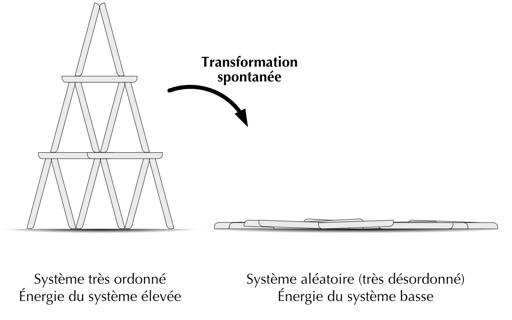
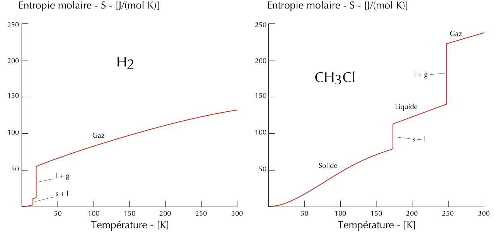
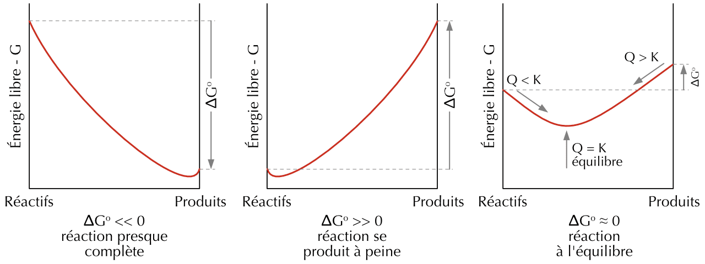

23 Thermodynamique
- Définir les notions d’entropie et de variation d’entropie.
- Énoncer les deuxième et troisième lois de la thermodynamique.
- Calculer l’entropie d’une réaction à partir des entropies standards.
- Appliquer la loi de Gibbs pour déterminer la spontanéité d’une réaction.
- Appliquer la loi de Gibbs pour effectuer des calculs d’énergie libre standard de réaction.
- Décrire comment énergie libre est reliée à l’équilibre chimique.
- Interpréter les données thermodynamiques pour prédire les conditions de spontanéité d’une réaction.
- Résoudre des problèmes quantitatifs impliquant la variation d’entropie, la spontanéité et la relation à l’équilibre chimique.
La thermodynamique est l’étude de l’énergie et de ses transformations. Dans le chapitre sur la thermochimie, nous nous sommes concentrés sur les transferts de chaleur au cours des réactions chimiques. Nous allons développer d’autres aspects des transferts d’énergie dans ce chapitre.
Nous avons appelé transformation spontanée, une transformation qui se produit dans des conditions spécifiques (température, pression et concentration). Une transformation qui ne se produit pas dans des conditions spécifiques est dite non spontanée. Nous avons également vu qu’une transformation spontanée dans une direction n’est pas spontanée dans la direction inverse.
Les réactions qui entraînent une diminution de l’énergie d’un système sont souvent spontanées.
\[ \begin{split} \ce{CH4(g) + 2O2(g) -> CO2(g) + 2H2O(l)} &\qquad \Delta H^{o} = -890.4 \text{ kJ/mol} \\ \ce{H^+(aq) + OH^-(aq) -> H2O(l)} &\qquad \Delta H^{o} = -56.2 \text{ kJ/mol} \end{split} \]
Nous pourrions conclure que les réactions exothermiques ont tendance à être spontanées. Cependant, ça n’est pas toujours le cas. Par exemple, lorsque la glace fond, le processus est endothermique et spontané.
\[ \ce{H2O(s) -> H2O(l)} \qquad \Delta H^{o} = +6.01 \text{ kJ/mol} \]
Cet exemple montre que le signe de \(\Delta H\) seul ne permet pas de prédire la spontanéité d’une réaction. la thermodynamique nous permettra de déterminer si une transformation est spontanée ou non pour des conditions données.
| Spontané | Non spontané |
|---|---|
| La glace fond à température ambiante. | La glace solidifie à température ambiante. |
| Le sodium métallique réagit avec l’eau pour former de l’hydroxyde de sodium et du dihydrogène. | L’hydroxyde de sodium réagit avec l’hydrogène pour produire du sodium métallique et de l’eau. |
| La corrosion du fer à température ambiante. | La transformation de la rouille en fer métallique à température ambiante. |
23.1 L’entropie (S)
Entropie - S
Mesure du degré de désordre d’un système. (Exprimée en joules par Kelvin J/K).
Plus le désordre est grand, plus l’entropie est élevée.
Classez les états de la matière par ordre d’entropie croissant :
Les solides sont plus ordonnés que les liquides et les liquides sont moins désordonnés que les gaz.
\[ solides < liquides < gaz \]
23.2 La deuxième loi de la thermodynamique
Deuxième loi de la thermodynamique
L’entropie de l’univers entier augmentera toujours avec le temps.
Supposons que vous construisiez un chateau de cartes. Le processus n’est pas spontané car vous allez dépenser de l’énergie pour bâtir le chateau. Les cartes sont arrangées au dessus de la table, l’énergie potentielle du système est élevée. Les cartes sont disposées dans des positions très spécifiques, le degré de désordre de votre chateau est bas.
Un courant d’air fait voler votre chateau de cartes par terre. Le processus est spontané car les cartes ont pris leurs nouvelles positions toute seules. Les cartes sont disposées à plat sur la table, l’énergie potentielle du système est plus basse. Les cartes sont disposées aléatoirement sur la table, le degré de désordre de votre chateau est élevé.

Un processus spontané suit donc naturellement deux tendances :
- Le système évolue spontanément vers un état d’énergie plus faible.
- Le système évolue spontanément vers un état plus désordonné.
Cela signifie que chaque processus aura tendence à évoluer spontanément vers un plus grand désordre. Le désordre est beaucoup plus probable que l’ordre. Cela s’applique également aux réactions chimiques.
23.3 La troisième loi de la thermodynamique
Comme elle est une mesure du désordre, l’entropie doit être nulle dans un système parfaitement régulier et sans désordre. Une substance cristalline au zéro absolu de température, où les mouvements atomique et moléculaire cessent, est considérée d’ordre parfait.
Troisième loi de la thermodynamique
L’entropie d’une substance pure et parfaitement cristalline est nulle à 0 K.
La troisième loi de la thermodynamique permet de déterminer l’entropie d’une substance à partir de données expérimentales. On transfère lentement de la chaleur à une substance qui se trouve à 0 K et on mesure sa température.

Répondez aux questions suivantes sur l’entropie.
- Qu’est-ce que l’entropie d’un système ? Dans quelle unité s’exprime-t-elle ?
- Énoncez la deuxième loi de la thermodynamique.
- Énoncez la troisième loi de la thermodynamique. Quelle est l’entropie d’un cristal parfait à 0 K ?
- L’entropie \(S\) est une mesure du degré de désordre d’un système : plus le désordre est grand, plus l’entropie est élevée. Elle s’exprime en J/K.
- L’entropie de l’univers augmente toujours au cours du temps (tout processus spontané s’accompagne d’une augmentation de l’entropie de l’univers).
- L’entropie d’une substance pure et parfaitement cristalline est nulle à 0 K. Un cristal parfait à 0 K a donc une entropie \(S = 0\).
23.4 La variation d’entropie (\(\Delta S\))
Pour un système qui subit une transfromation entre un état initial et un état final, on peut définir la différence d’entropie entre ces deux états (\(\Delta S\)).
En général, l’entropie augmente dans les cas suivants :
- Une substance est chauffée.
- Les solides fondent et deviennent liquides.
- Les solides ou les liquides vaporisent pour produire des gaz.
- Les solides ou les liquides se dissolvent dans un solvant pour former des solutions.
- Une réaction chimique provoque une augmentation du nombre de particules du système.
Au cours d’une réaction spontanée, le système devient plus désordonné après qu’avant la réaction, donc \(\Delta S > 0\). La nature “préfère” les valeur de \(\Delta S\) positives contrairement aux valeurs \(\Delta H\) qui sont généralement négatives (exothermiques).
Déterminez si l’entropie augmente ou diminue pour les réactions suivantes en justifiant votre réponse :
- \[ \ce{2 CO(g) + O2(g) -> 2 CO2(g)} \]
- \[ \ce{H2O(l) -> H2O(g)} \]
- \[ \ce{Na2CO3(s) -> Na2O(s) +CO2(g)} \]
Les solides sont plus ordonnés que les liquides et les liquides sont moins désordonnés que les gaz.
- \[ \ce{2 CO(g) + O2(g) -> 2 CO2(g)} \quad S \Downarrow \]
L’entropie diminue car il y a moins de molécules de gaz de produits et un produit est créé à partir de deux réactifs. - \[ \ce{H2O(l) -> H2O(g)} \quad S \Uparrow \]
L’entropie augmente car l’eau subit un changement de phase de liquide à gazeux. - \[ \ce{Na2CO3(s) -> Na2O(s) +CO2(g)} \quad S \Uparrow \]
L’entropie augmente car il y a deux molécules du côté des produits dont l’une est un gaz.
23.4.1 L’entropie molaire standard (\(S^o\)) et l’entropie de réaction (\(\Delta S^o\))
Si l’on considère 4 particules de gaz et 4 moles de particules de gaz, le degré de désordre possible sera plus grand lorsque les particules seront plus nombreuses. La valeur de l’entropie dépend donc de la quantité de matière (propriété extensive). Afin de travailler avec des valeur d’entropie de référence, on introduit l’entropie molaire standard.
Entropie molaire standard - \(S^o\)
L’entropie molaire standard (\(S^o\)) est l’entropie de 1 mole d’une substance aux conditions standards.
(Exprimée en joules par mole et par Kelvin J/(mol K)).
Les entropies molaires standard (\(S^{o}\)) servent surtout à calculer les variations d’entropie standard (\(\Delta S^{o}\)) des réactions chimiques. On peut relier la variation d’entropie aux entropies des réactifs et des produits de la même manière que pour les enthalpies de formation.
\[ \Delta S^o = \sum n_p \cdot S^{o}(produits) - \sum n_r \cdot S^{o}(reactifs) \]
\(n_p\) et \(n_r\) sont les coéfficients stoechiométriques des réactifs et produits de la réaction étudiée.
Calculez la variation d’entropie standard (\(\Delta S^o\)) de la réaction suivante :
\[ \ce{2 CO(g) + O2(g) -> 2CO2(g)} \]
Sachant que :
| Substance | \(S^o\ \mathrm{J/(mol \cdot K)}\) |
|---|---|
| \(\ce{CO2(g)}\) | 213.64 |
| \(\ce{CO(g)}\) | 197.91 |
| \(\ce{O2(g)}\) | 205.3 |
\[ \ce{2 CO(g) + O2(g) -> 2CO2(g)} \]
\[ \begin{split} \Delta S^o &= 2\ \text{ mol} \cdot S^o(CO_2) - ( 2\ \text{ mol} \cdot S^o(CO) + S^o(O_2) ) \\ &= 2\ \cancel{\text{mol}} \cdot 213.64 \mathrm{J/(\cancel{mol} \cdot K)} - ( 2\ \cancel{\text{mol}} \cdot 197.91\ \mathrm{J/(\cancel{mol} \cdot K)} + 205.3\ \mathrm{J/(\cancel{mol} \cdot K)} ) \\ &= -173.84\ \text{ J/K} \end{split} \]
Puisqu’il y a une diminution du nombre de moles d’espèces gazeuses après la réaction, l’entropie diminue. L’entropie des réactifs est supérieure à l’entropie des produits. Par conséquent, le changement d’entropie de la réaction est négatif.
23.5 L’énergie libre (\(G\)) et la variation d’énergie libre (\(\Delta G\))
Pour exprimer la spontanéité d’une transformation, nous introduisons une fonction thermodynamique appelée énergie libre de Gibbs (G) ou simplement énergie libre.
Le travail fourni par une réaction chimique peut changer le volume ou la pression d’un système. L’énergie libre de Gibbs (G) mesure de la quantité d’énergie disponible qui peut être fournie par ce système sans changer ni le volume, ni la pression du système.
\[ G = H - T \cdot S \]
Le travail électrique fourni par une pile électrique en créant une différence de potentiel entre les deux électrodes est un exemple de travail qui ne change pas la pression et le volume du système.
Comme pour les autres grandeurs thermodynamiques, on peut définir une variation d’énergie libre (\(\Delta G\)). La variation de l’énergie libre d’un système se mesure lorsqu’un système passe d’un état initial à un état final. Dans le cas d’une réaction chimique, lorsque les réactifs se transforment en produits. Cette valeur nous indique l’énergie maximale utilisable libérée (ou absorbée) lors de la réaction.
\[ \Delta G = \Delta H - T \cdot \Delta S \]
En outre, son signe (positif ou négatif) nous indique si une réaction se produira spontanément, c’est-à-dire sans apport d’énergie.
Pour prédire la spontanéité d’une transformation chimique ou physique, il faut connaître à la fois la variation d’enthalpie (\(\Delta H\)) mais également la variation d’entropie (\(\Delta S\)) associées à la transformation. Pour que cette relation soit vérifiée, deux conditions sont nécessaires :
- La température reste constante tout au long de la réaction.
- La pression reste constante tout au long de la réaction.
Cette relation nous permet de prédire la spontanéité d’une réaction lorsqu’on connaît la variation d’enthalpie, la variation d’entropie et la température.
| \(\Delta G < 0\) | Réaction spontanée | Réaction exergonique |
| \(\Delta G > 0\) | Réaction non spontanée | Réaction endergonique |
| \(\Delta G = 0\) | Le système est à l’équilibre |
La spontanéité d’une réaction (\(\Delta G = \Delta H - T \cdot \Delta S\)) dépend des signes de \(\Delta H\) et \(\Delta S\) ainsi que de la température. Pour chacun des cas suivants, indiquez si la réaction est spontanée à toute température, à aucune température, seulement à basse température ou seulement à haute température.
- \(\Delta H < 0\) et \(\Delta S > 0\).
- \(\Delta H > 0\) et \(\Delta S < 0\).
- \(\Delta H < 0\) et \(\Delta S < 0\).
- \(\Delta H > 0\) et \(\Delta S > 0\).
On utilise \(\Delta G = \Delta H - T \cdot \Delta S\) ; la réaction est spontanée si \(\Delta G < 0\).
- \(\Delta H < 0\) et \(-T \cdot \Delta S < 0\) : \(\Delta G < 0\) quelle que soit \(T\) → spontanée à toute température.
- \(\Delta H > 0\) et \(-T \cdot \Delta S > 0\) : \(\Delta G > 0\) quelle que soit \(T\) → spontanée à aucune température.
- \(\Delta H < 0\) et \(-T \cdot \Delta S > 0\) : \(\Delta G < 0\) seulement si \(T\) est faible → spontanée à basse température.
- \(\Delta H > 0\) et \(-T \cdot \Delta S < 0\) : \(\Delta G < 0\) seulement si \(T\) est grand → spontanée à haute température.
23.6 L’énergie libre standard de réaction (\(\Delta G^o\))
Tout comme pour l’enthalpie et l’entropie, afin de travailler avec des valeur de référence, on introduit l’énergie libre standard de réaction. L’énergie libre standard de réaction (\(\Delta G^o\)) est la variation d’énergie libre pour une réaction lorsqu’elle se produit dans les conditions standard, c’est-à-dire lorsque des réactifs dans leur état standard sont convertis en produits dans leur état standard. La relation précédente devient :
\[ \Delta G^o = \Delta H^o - T \cdot \Delta S^o \]
Utilisez l’équation de Gibbs pour déterminer la variation d’énergie libre standard, à 25°C, des réactions suivantes.
- \[ \begin{split} & \ce{2 NO(g) + O2(g) -> 2 NO2(g)} \\ & \Delta H^o = -114.1 \text{ kJ} \text{ et } \Delta S^o = -146.2 \text{ J/K} \end{split} \]
- \[ \begin{split} & \ce{2 CO(g) + 2 NH3(g) -> C2H6(g) + 2 NO(g)} \\ & \Delta H^o = 409 \text{ kJ} \text{ et } \Delta S^o = -129.1 \text{ J/K} \end{split} \]
- \[ \begin{split} \Delta G^o &= \Delta H^o - T \cdot \Delta S^o \\ &= -114.1\ \text{ kJ} - 298.15 \cdot (-0.1462\ \text{ kJ/K}) \\ &= -70.5\ \text{ kJ} \quad \text{(Réaction spontanée)} \end{split} \]
- \[ \begin{split} \Delta G^o &= \Delta H^o - T \cdot \Delta S^o \\ &= 409\ \text{ kJ} - 298.15 \cdot (-0.1291\ \text{ kJ/K}) \\ &= 447.5\ \text{ kJ} \quad \text{(Réaction non spontanée)} \end{split} \]
Les énergies libres standard de formation (\(\Delta G^o_f\)) sont des valeurs que l’on peut trouver dans des tables et qui permettent de calculer l’énergie libre standard d’une réaction en utilisant la relation suivante :
\[ \Delta G^o = \sum n_p \cdot \Delta G^{o}_f(produits) - \sum n_r \cdot \Delta G^{o}_f(reactifs) \]
Calculez \(\Delta G^o\) à 298 K de la réaction suivante :
\[ \ce{4 HCl(g) + O2(g) -> 2 Cl2(g) + 2 H2O(g)} \]
- En utilisant l’équation de Gibbs : \[ \Delta S^o = -128.8\ \text{ J/K} \qquad \Delta H^o = -114.4\ \text{ kJ} \]
- En utilisant les énergies libres standard de formation : \[ \begin{split} & \Delta G^o_f(\ce{HCl(g)}) = -95.3\ \text{ kJ/mol} \quad \Delta G^o_f(\ce{O2(g)}) = 0\ \text{ kJ/mol} \\ & \Delta G^o_f(\ce{Cl2(g)}) = 0\ \text{ kJ/mol} \quad \Delta G^o_f(\ce{H2O(g)}) = -228.6\ \text{ kJ/mol} \end{split} \]
- \[ \begin{split} \Delta G^o &= \Delta H^o - T \cdot \Delta S^o \\ &= -114.4\ \text{ kJ} - 298\ \text{ K} \cdot (-0.1288)\ \text{ kJ/K} \\ &= -114.4\ \text{ kJ} + 38.4\ \text{ kJ} = -76\ \text{ kJ} \end{split} \]
- \[ \begin{split} \Delta G^o &= [2 \Delta G^o_f(\ce{Cl2(g)}) + 2 \Delta G^o_f(\ce{H2O(g)})] - [4 \Delta G^o_f(\ce{HCl(g)}) + \Delta G^o_f(\ce{O2(g)})] \\ &= [2 \cdot 0\ \text{ kJ/mol} + 2 \cdot (-228.6)\ \text{ kJ/mol}] - [4 \cdot (-95.3)\ \text{ kJ/mol} + 1 \cdot 0\ \text{ kJ/mol}] \\ &= (-457.2 + 381.2) \text{ kJ} = -76\ \text{ kJ} \end{split} \]
23.7 L’énergie libre et équilibre chimique
Les réactifs et les produits d’une réaction sont presque toujours dans un état différent de leur état standard. Pour déterminer si une réaction est spontanée, il faut donc tenir compte des concentrations et/ou des pressions des espèces impliquées. Il est possible de connaître \(\Delta G^o\) à partir de tables, mais il faut connaître \(\Delta G\) pour déterminer la spontanéité.
La thermodynamique nous apprend que la relation entre \(\Delta G\) et \(\Delta G^o\) est la suivante :
\[ \Delta G = \Delta G^o + RT \cdot ln(Q) \]
où \(R\) est la constante des gaz parfaits, T est la température en kelvin et Q est le quotient de réaction.
Par définition, à l’équilibre, \(\Delta G = 0\) et \(Q = K\) (K est la constante d’équilibre). Ainsi :
\[ 0 = \Delta G^o + RT \cdot ln(K) \quad \Rightarrow \quad \Delta G^o = - RT \cdot ln(K) \]
| \(K\) | \(ln(K)\) | \(\Delta G^o\) | Résultat à l’équilibre |
|---|---|---|---|
| > 1 | positif | négatif | Les produits sont favorisés |
| = 1 | nul | nul | Ni produits, ni réactifs sont favorisés |
| < 1 | négatif | positif | Les réactifs sont favorisés |
Selon cette équation, plus K est grand, plus \(\Delta G^o\) est négatif. Cette équation permet de déterminer la constante d’équilibre d’une réaction si l’on connaît la variation de l’énergie libre standard, et vice versa.

Déterminez la valeur de la constante d’équilibre, à 25°C, de la réaction suivante :
\[ \ce{2 NO2(g) <=> N2O4(g)} \]
Avec \[ \begin{split} \Delta G^o_f[\ce{N2O4(g)}] = 97.82\ \text{ kJ/mol} \end{split} \qquad \begin{split} \Delta G^o_f[\ce{NO2(g)}] = 51.30\ \text{ kJ/mol} \end{split} \]
\[ \ce{2 NO2(g) <=> N2O4(g)} \]
\[ \begin{split} \Delta G^o &= \Delta G^o_f[\ce{N2O4(g)}] - 2 \cdot \Delta G^o_f[\ce{NO2(g)}] \\ &= 97.82\ \mathrm{\frac{kJ}{mol}} - 2 \cdot 51.30\ \mathrm{\frac{kJ}{mol}} \\ &= -4.78\ \text{ kJ/mol} \end{split} \]
\[ \begin{split} \Delta G^o &= - RT \cdot ln(K) \\ ln(K) &= \frac{- \Delta G^o}{RT} = \frac{- (-4780\ \text{ J/mol})}{8.314\ \mathrm{J/(mol \cdot K)} \cdot 298.15\ \text{ K}} = 1.93 \\ K &= e^{1.93} = 6.9 \end{split} \]
23.8 Résumé
- L’entropie \(S\) mesure le degré de désordre d’un système (en J/K) : plus le désordre est grand, plus \(S\) est élevée.
- L’entropie de l’univers augmente toujours et l’entropie d’une substance pure parfaitement cristalline est nulle à 0 K.
- La variation d’entropie standard d’une réaction se calcule à partir des entropies molaires standard.
- L’énergie libre de Gibbs \(G = H - T \cdot S\) ; sa variation vaut \(\Delta G = \Delta H - T \cdot \Delta S\) (à \(T\) et \(P\) constantes). Le signe de \(\Delta G\) donne la spontanéité : \(\Delta G < 0\) réaction spontanée (exergonique) ; \(\Delta G > 0\) non spontanée (endergonique) ; \(\Delta G = 0\) équilibre.
- Selon les signes de \(\Delta H\) et \(\Delta S\), une réaction peut être spontanée à toute température, à aucune, seulement à basse ou seulement à haute température.
- L’énergie libre standard de réaction se calcule aussi à partir des énergies libres standard de formation.
- Hors des conditions standard : \(\Delta G = \Delta G^o + RT \cdot \ln Q\). À l’équilibre \(\Delta G = 0\) et \(Q = K\), d’où \(\Delta G^o = -RT \cdot \ln K\) : un \(\Delta G^o\) négatif correspond à \(K > 1\) (produits favorisés).
23.9 Exercices supplémentaires
Dans chacun des cas suivants, prédisez s’il y aura une augmentation ou une diminution de l’entropie du système. Si vous ne pouvez pas prédire, expliquez pourquoi.
- La synthèse de l’ammoniac.
\[ \ce{N2(g) + 3 H2(g) -> 2 NH3(g)} \] - La préparation d’une solution de saccharose (sucre de table).
\[ \ce{C12H22O11(s) + H2O(l) -> C12H22O11(aq)} \] - L’évaporation à sec d’une solution aqueuse d’urée. \[ \ce{CO(NH2)2(aq) -> CO(NH2)2(s)} \]
- Quatre moles de réactifs gazeux donnent deux moles de produits gazeux. Deux moles de gaz sont perdues.
\[ S \Downarrow, \text{l'entropie diminue} \] - Les molécules de saccharose sont très ordonnées à l’état solide. Elles sont distribuées au hasard dans la solution aqueuse.
\[ S \Uparrow, \text{l'entropie augmente} \] - L’eau s’évapore et se convertit en gaz. \(S \Uparrow\) (l’entropie augmente). L’urée passe d’une distribution aléatoire dans la solution à un solide très ordonné. \(S \Downarrow\) (l’entropie diminue). Sans autre information, on ne peut pas dire si l’entropie du système augmente ou diminue.
Calculez la variation d’entropie standard (\(\Delta S^o\)) de la réaction suivante :
\[ \ce{4 HCl(g) + O2(g) -> 2 Cl2(g) + 2 H2O(g)} \]
Sachant que :
| Substance | \(S^o\ \mathrm{J/(mol \cdot K)}\) |
|---|---|
| \(\ce{HCl(g)}\) | 186.8 |
| \(\ce{O2(g)}\) | 205.0 |
| \(\ce{Cl2(g)}\) | 223.0 |
| \(\ce{H2O(g)}\) | 188.7 |
\[ \ce{4 HCl(g) + O2(g) -> 2 Cl2(g) + 2 H2O(g)} \]
\[ \begin{split} \Delta S^o &= (2\ \text{ mol} \cdot S^o(Cl_2) + 2\ \text{ mol} \cdot S^o(H_2O) ) - ( 4\ \text{ mol} \cdot S^o(HCl) + S^o(O_2) ) \\ &= (2\ \text{ mol} \cdot 223.0\ \mathrm{J/(mol \cdot K)} + 2\ \text{ mol} \cdot 188.7\ \mathrm{J/(mol \cdot K)} ) \\ & \qquad - ( 4\ \text{ mol} \cdot 186.8\ \mathrm{J/(mol \cdot K)} + 205.0\ \mathrm{J/(mol \cdot K)} ) \\ &= -128.8\ \text{ J/K} \end{split} \]
\(\Delta S^o\) est négatif, l’entropie diminue.
L’oxyde de calcium (\(\ce{CaO}\)), également appelé chaux vive, est une substance qui est utilisée dans de nombreuses applications industrielles. On peut le préparer par décomposition à haute températureen du calcaire (\(\ce{CaCO3}\)), selon l’équation :
\[ \ce{CaCO3(s) <=> CaO(s) + CO2(g)} \]
La réaction est réversible et, sous certaines conditions, le \(\ce{CaO}\) et le \(\ce{CO2}\) se recombinent pour former à nouveau du \(\ce{CaCO3}\). Pour éviter que cela ne se produise, le \(\ce{CO2}\) est éliminé à mesure qu’il se forme, favorisant la réaction directe.
Vous allez estimez la température à laquelle cet équilibre commence à favoriser les produits pour maximiser la production de \(\ce{CaO}\). (Table des propriétés thermodynamiques standard)
- Calculez la variation d’enthalpie standard de la réaction :
- Calculez la variation d’entropie standard de la réaction :
- À l’aide de la relation de Gibbs, calculez l’énergie libre standard de la réaction :
- Aux conditions standards, la réaction favorise-t-elle les produits ou les réactifs ? (Justifiez votre réponse).
- Calculez à quelle température la réaction atteint un équilibre entre produits et réactifs.
- Calculez l’énergie libre de la réaction à une température de 5° supérieure à cette température.
- Dans ces conditions, la réaction favorise-t-elle les produits ou les réactifs ? (Justifiez votre réponse).
- \[ \begin{split} \ce{\Delta H^o &= [\Delta H^o_f(\ce{CaO}) + \Delta H^o_f(\ce{CO2})] - [\Delta H^o_f(\ce{CaCO3})]} \\ &= [(-634.9\ \text{ kJ/mol}) + (-393.51\ \text{ kJ/mol})] - (-1220.0\ \text{ kJ/mol}) \\ &= 191.59\ \text{ kJ/mol} \end{split} \]
- \[ \begin{split} \ce{\Delta S^o &= [S^o_f(\ce{CaO}) + S^o_f(\ce{CO2})] - [S^o_f(\ce{CaCO3})]} \\ &= (38.1\ \mathrm{J/(K \cdot mol)} + 213.8\ \mathrm{J/(K \cdot mol)}) - (110.0\ \mathrm{J/(K \cdot mol)}) \\ &= 141.9\ \mathrm{J/(K \cdot mol)} = 0.1419\ \mathrm{kJ/(K \cdot mol)} \end{split} \]
- \[ \begin{split} \Delta G^o &= \Delta H^o - T \cdot \Delta S^o \\ &= 191.59\ \text{ kJ/mol} - (298\ \text{ K} \cdot 0.1419\ \mathrm{kJ/(K \cdot mol)} ) \\ &= 149.3\ \text{ kJ/mol} \end{split} \]
- Aux conditions standards, la réaction favorise les réactifs car l’énergie libre standard est supérieure à zéro.
- \[ \begin{split} \Delta G^o &= \Delta H^o - T \cdot \Delta S^o \\ \text{à l'équilibre } \Delta G^o &= 0 \\ \Rightarrow 0 &= \Delta H^o - T \cdot \Delta S^o \\ \end{split} \qquad \begin{split} T &= \frac{\Delta H^o}{\Delta S^o} \\ &= \frac{191.59\ \text{ kJ/mol}}{0.1419\ \mathrm{kJ/(K \cdot mol)}} \\ &= 1350\ \text{ K} \quad (1077\ \text{ °C}) \end{split} \]
- \[ \begin{split} \Delta G^o &= \Delta H^o - T \cdot \Delta S^o \\ &= 191.59\ \text{ kJ/mol} - (1355\ \text{ K} \cdot 0.1419\ \mathrm{kJ/(K \cdot mol)} ) \\ &= -0.68\ \text{ kJ/mol} \end{split} \]
- Dans ces conditions, la réaction favorise les produits car l’énergie libre standard est inférieure à zéro.
Dans cet exemple, les valeurs standards de \(\Delta H^o\) et \(\Delta S^o\) sont utilisées pour calculer le \(\Delta G^o\) à des températures beaucoup plus élevées. Cette approche ne nous donne pas une valeur précise pour \(\Delta G^o\) car \(\Delta H^o\) et \(\Delta S^o\) changent avec la température, mais c’est une estimation raisonnablement convenable.
Pour la synthèse de l’ammoniac \(\ce{N2(g) + 3 H2(g) -> 2 NH3(g)}\) à 298 K, on donne \(\Delta H^o = -92.2\) kJ et \(\Delta S^o = -198.8\) J/K.
- Calculez \(\Delta G^o\) à 298 K. La réaction est-elle spontanée dans les conditions standard ?
- Calculez la constante d’équilibre \(K\) à 298 K.
- \[ \begin{split} \Delta G^o &= \Delta H^o - T \cdot \Delta S^o \\ &= -92.2 - 298 \cdot (-0.1988) = -92.2 + 59.2 = -33.0 \text{ kJ} \end{split} \] \(\Delta G^o < 0\) : la réaction est spontanée dans les conditions standard.
- \(\Delta G^o = -RT \cdot \ln K\), donc : \[ \ln K = \frac{-\Delta G^o}{RT} = \frac{33000}{8.314 \cdot 298} = 13.3 \qquad K = e^{13.3} = 6.0 \cdot 10^{5} \]